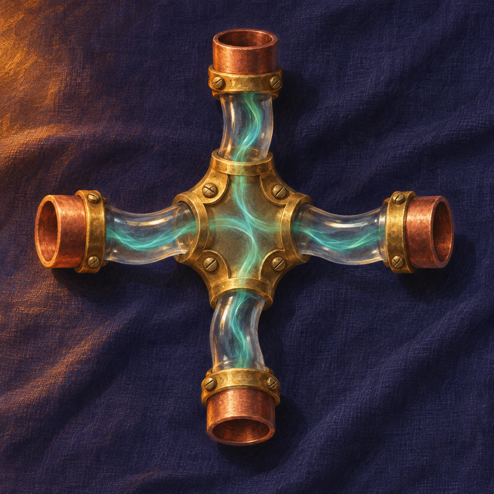

Вещь с историей
Перемычка четырёх ветров
Четыре медных гнезда соединены прозрачными трубками, внутри мерцает воздух.
Соединить согласованные каналы на пульте по схеме Ильера. Использование в сцене требует конкретного решения ведущего.

Четыре медных гнезда соединены прозрачными трубками, внутри мерцает воздух.
Соединить согласованные каналы на пульте по схеме Ильера. Использование в сцене требует конкретного решения ведущего.